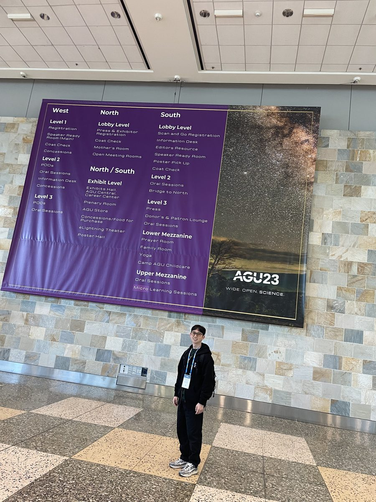
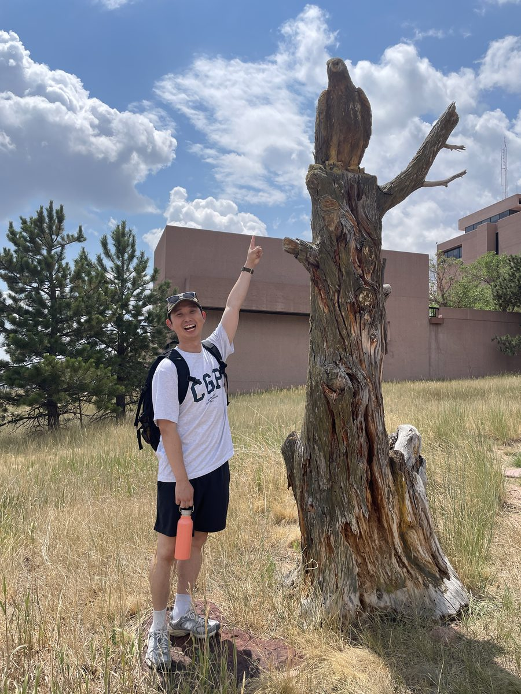
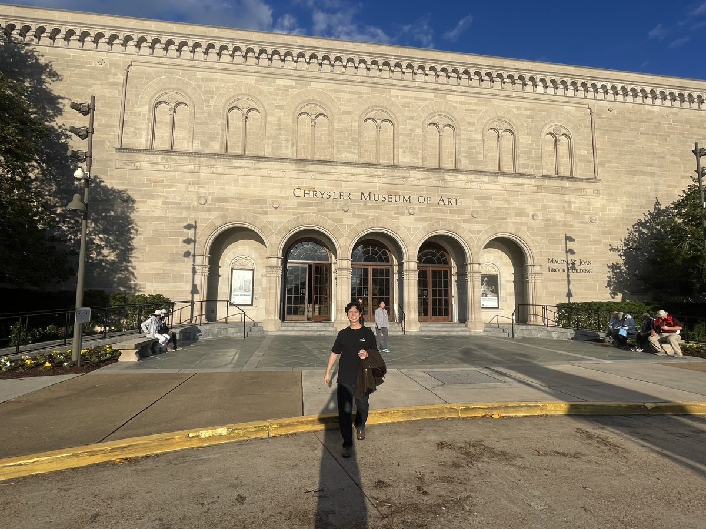
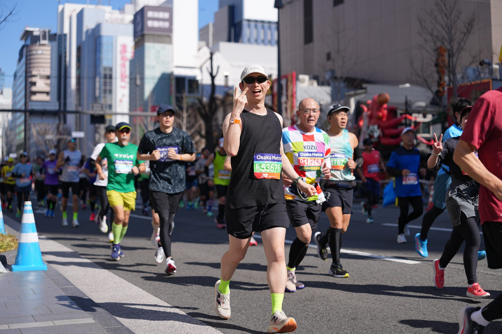

About
I study the vertical structure of ozone in the troposphere and the upper troposphere & lower stratosphere (UTLS), using balloon-borne ozonesonde measurements together with reanalysis and satellite data.
My work centers on stratosphere–troposphere exchange (STE): how stratospheric air — and the ozone it carries — descends into the troposphere, and how well current chemical reanalyses reproduce those events over the Korean Peninsula. I took part in the NASA/NCAR ACCLIP and NASA ASIA-AQ field campaigns as a member of the Korean balloon-borne sounding team.
Research
Ozone intrusion and stratosphere–troposphere exchange
Using daily ozonesonde profiles obtained over Korea in August 2021 and 2022, I analyze ozone intrusion events on synoptic timescales. Three-dimensional potential vorticity and ozone fields from ERA5 and MERRA-2 show that the descent of stratospheric air into the troposphere in August 2021 was tied to an anticyclonic Rossby wave breaking event over the Korean Peninsula.
Evaluating chemical reanalyses against high-resolution soundings
Ozonesondes resolve vertical structure that reanalyses cannot. Comparing sonde profiles with reanalyses coupled to chemical transport models lets me quantify where — in which layers — the largest biases occur, and how the synoptic-scale variability of ozone differs between datasets.
Satellite ozone validation with consecutive soundings
Ongoing work evaluates GEMS ozone retrievals against the consecutive summertime ozonesonde measurements collected during the ACCLIP campaign.
Observation, instruments, and data
Alongside the analysis work, I build and document the observational side: ozonesonde preparation and launch, radiosonde reception with general-purpose software-defined radio equipment, and publication of the resulting 2021–2024 vertical meteorological and ozone profile dataset.
Publications
-
GEMS Ozone Evaluation Using Consecutive Summertime Ozonesonde Measurements During ACCLIP CampaignSubmitted
2026 · Journal of Geophysical Research: Atmospheres
-
Comparison of daily ozonesonde measurements and chemical reanalyses over South Korea based on 2021 Pre-ACCLIP data: An ozone intrusion case
2025 · Journal of Geophysical Research: Atmospheres, 130(24), e2025JD044492
-
The analysis of summertime tropospheric ozone at Anmyeon using ozonesonde measurements in 2021–2022
2024 · Journal of Korean Society for Atmospheric Environment, 40(3), 373–383
-
Atmospheric and ozone profiling data measured with ozonesonde from 2021 to 2024
2024 · Geodata, 6(4), 561–577
-
Radiosonde observation using general purpose radio receiving instruments
2024 · Atmosphere (Korean Meteorological Society), 34(3), 325–336
-
Local enhancement mechanism of cold surges over the Korean Peninsula
2018 · Atmosphere (Korean Meteorological Society), 28, 383–392
Conference Presentations
Ozone intrusion event associated with the East Asian Summer Monsoon
Poster · Quadrennial Ozone Symposium (QOS), 36th Meeting, Boulder, USA
A case study based on daily ozonesonde measurements and comparison to chemical reanalyses.
Analysis of ozone intrusion events and comparison with chemical reanalyses
Oral · Asia Oceania Geosciences Society (AOGS) Annual Meeting
Evaluation of chemical reanalyses using daily ozone measurements: an ozone intrusion case
Poster · American Geophysical Union (AGU) Fall Meeting, San Francisco, USA
Field Campaigns
ASIA-AQ
Airborne and Satellite Investigation of Asian Air Quality, led by NASA
Role: Korean balloon-borne sounding team — ozonesonde preparation and launch.
ACCLIP
Asian Summer Monsoon Chemical & Climate Impact Project, led by NASA & NCAR
Role: Korean balloon-borne sounding team — ozonesonde preparation and launch. Our team obtained more than 80 daily ozonesonde profiles during August 2021 and 2022.



Education & Awards
M.S., Atmospheric Science — Kongju National University
Advisor: Prof. Joowan Kim
Thesis: Analysis of Ozone Intrusion Events and Comparison with Chemical Reanalyses Using Daily Ozonesonde Measurements
B.S., Atmospheric Science — Kongju National University
NASA Group Achievement Award
Awarded to the ACCLIP Team by the National Aeronautics and Space Administration
Best Paper Presentation Award (우수논문발표상)
Korean Meteorological Society, 2023 Autumn Conference — poster presentation
Curriculum Vitae
The full CV, including publications, presentations, and campaign participation, is available as a PDF.
Contact
- Emailhyungyu.m.k@gmail.com
- OfficeDepartment of Atmospheric Science, Kongju National University
56 Gongjudaehak-ro, Gongju 32588, South Korea
